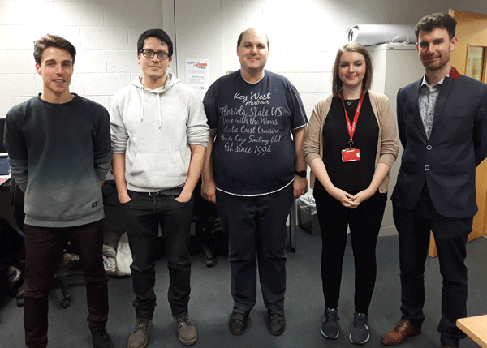
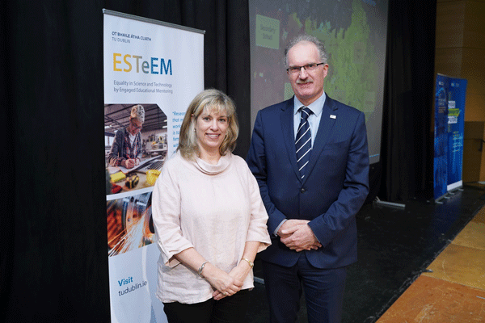
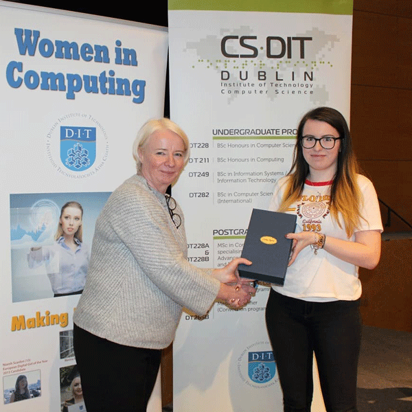
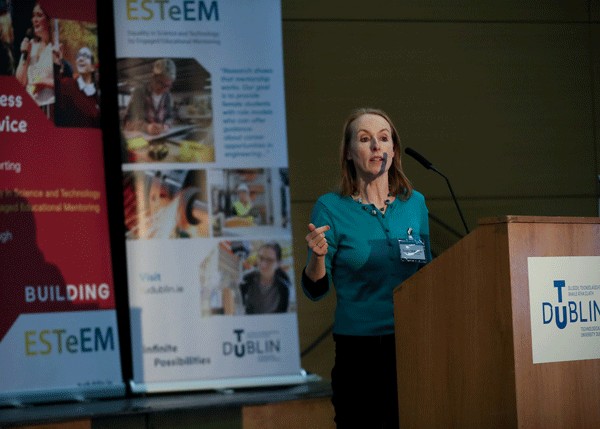
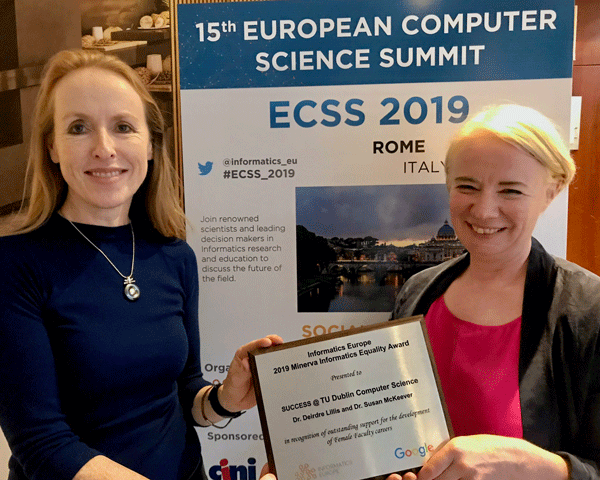

Cracking the Silicon Ceiling - Female intake for Computer Science Degree reaches a record 42%

42 is a magic number – it's the angle at which sunlight passing through rain droplets creates a rainbow and it’s the meaning of life, the universe and everything. It's also the percentage of female students on TU Dublin’s Computer Science Interational degree this year. Over 190 students have enrolled on TU Dublin’s three computer science undergraduate programmes in 2020/21 and the intake of female students is up 35% from the 2015 figures, nearing 30% across the board.
These figures are highly encouraging and can be viewed as part of sustained campaign to increase female participation in courses across the faculty. Head of Undergraduate Studies at the School of Computer Science Dr Dympna O’Sullivan welcomed the new figures saying
“The School has been working hard on a number of initiatives to increase the proportion of female students studying Computer Science and the number of female students enrolling on our courses is a great endorsement of our efforts. We are proud of the inclusive environment we are building at TU Dublin Computer Science. Computer Science is one of the most exciting and innovate industries to enter. Computer Scientists are designing and developing technologies that will change how we live, work and play and as such it is important that women's intellects, insights and voices are reflected in new computing paradigms, products and services.

In 2015 TU Dublin held Ireland’s the first ever Code First: Girls courses on campus
“If she can’t see it, she can’t be it” is the core of the strategy adopted by TU Dublin Computer Science over the past 5 years, a strategy which is now paying rich dividends. Providing accessible role models is a key element and significant strides have been made to address the issue of gender balance, amongst both its staff and students. The recent figures are in many ways the culmination of years of determined effort to increase the intake of female students into our courses.
ESTeEM
Providing students with a positive role model is the key function of the ESTeEM gender initiative established at TU Dublin. The ESTeEM (Equality in Science & Technology by Engaged Education Mentoring) mentorship programme is a unique initiative which aims to brings female Computer Science & Engineering students in to contact with female mentors currently working in relevant industry positions. Industry mentor's provide the students with guidance and information around possible career paths, as well as the necessary skills now needed in industry. The initiative was set up in 2018 by Leslie Shoemaker, a lecturer in the School of Electrical and Electronic Engineering. Speaking about the recent increase in figures for the first-year intake at the School of Computer Science Leslie says she is greatly encouraged.
‘When we started ESTEeM our aim was to get the message out to young women, both prospective and current students, that computer science was a great option for them. This is a career path that has lots of dynamic options and opportunities for young women and it looks like this news is starting to get out there. This is a great start and I look forward to seeing how the gender balance shifts towards a more balanced representation in the coming years because the international research is quite clear about how inclusive workplaces do better for staff and customers on all fronts.'

ESTeEM Co-Ordinator Leslie Shoemaker with TU Dublin President Prof. David Fitzpatrick
The importance of mentoring has also been recognised by industry. Salesforce International recently invested $300,000 in a unique industry mentoring programme which aims to increase the participation of underrepresented groups in the IT sector in Ireland. This announcement coincides with the company's 20th anniversary in Ireland. The project, the Saer Mentoring Programme, will assist 120 students in finding meaningful paid internships in ICT-related fields which will ultimately result in rewarding careers upon graduation from TU Dublin. The 120 students will be from groups that are traditionally underrepresented in the ICT sector, including women, those from areas of social disadvantage, and students with disabilities. Sixty trained industry mentors will support them.
“If she can’t see it, she can’t be it” is also reflected in the recent achievements of female students. This year TU858 student Jennifer Nolan won the prestigious Global Undergraduate Awards for the Island of Ireland for her project Navigation Assistant: An Investigation into Obstacle Avoidance for the Visually Impaired using the Raspberry Pi. This award was previously won in 2015 by TU Dublin graduate Deirdre Corr for a novel Sleep Apnoea Detection System.

TU858 student Jennifer Nolan recently won the prestigious Undergraduate Award for her final Year Project ‘Navigation Assistant’
Promoting the careers of female faculty
“If she can’t see it, she can’t be it” is also at the heart of a strategy to address the issue of gender imbalance which starts within academia itself.
Research conducted by the HEA into the University sector in 2017 shows that whilst 51% of entry level academic positions are held by women, that corresponds to only 24% of high-level Professorships.1 To this end the development of the Senior Academic Leadership Initiative, (SALI) by the HEA was a greatly welcomed proposition. Within TU Dublin it allowed for the creation of a unique new Professorship in Inclusive Computer Science. Dr Susan McKeever (Senior lecturer School of Computer Science) was instrumental in the creation of this new role, which can be viewed as part of a broader strategy within the School to increase gender balance amongst not just its staff, but also its students. For Dr McKeever creating the right type of learning environment for these students is key.
“We still do not have enough women entering the tech sector – a sector where the technologies that affect every aspects of our lives are produced. We can’t be passive about changing this - We have to offer environments, programmes and jobs that are attractive and supportive to both genders. This professorship will now be part of driving this change, focusing on attracting more female students into computer science, and ultimately into the technology sector.”
Creating the right type of learning environment means making positive changes at all levels and all stages across a University. Within TU Dublin Professor Sarah Jane Delany co-founded the Women Leaders in Higher Education network in 2016 to provide a support network for females in all leadership roles. This means providing support across all roles within Higher Education, including women in academic, administrative, research and technical positions.
“The aim of the network is to empower and enable women in all roles across TU Dublin. We wanted to give women opportunities and time for reflection on their personal and professional development and to consider their career enhancement. Our event speakers have given inspirational talks sharing their experiences and personal journeys. Through the network we can see the importance of shared experiences, support and mentorship for encouraging female participation and leadership at all levels in TU Dublin"

Dr Susan McKeever helped to establish the INGENIC Network
TU Dublin is also a founding member of the recently set up INGENIC group (Irish Network for Gender Equality at National 3rd Level Institutions for Computing) which consists of representatives from 17 different third-level institutes across Ireland. The INGENIC network’s purpose is to help third-level institutes work together to foster the right type of learning environment which it is hoped will lead to a greater intake and retention of female students. “There is huge value in working together and learning from each other” explains Dr. Susan McKeever. “We have lines of communication into every third level computing school which is a powerful enabler for driving change."
All of these initiatives were recognised as TU Dublin Computer Science recently received the Minerva Informatics Europe Award in 2019. The award was in recognition of TU Dublin Computer Science’s sustained work in addressing the persistent issue of Gender Imbalance within Computer Science at third-level.

Dr Susan McKeever and Dr Deirdre Lillis receiving the Minerva Informatics Equality Award
Vision for the TU Dublin School of Computer Science
Reflecting on the successes over the past five years, Head of School Dr. Deirdre Lillis has identified a handful of factors as being critical for success.
“Creating a holistic culture, where inclusion is everyone’s responsibility, rather than treating females differently is critical. Our female students didn’t want special treatment, they wanted the same opportunities and natural peer supports that the male students had. The second key factor for us was creating a supportive network of accessible role models and mentors for both staff and students and celebrating every success along the way. I am incredibly proud of what the team here have achieved - everyone is involved in some way. For two decades this has been an intractable problem, which is why this year’s first year intake is so encouraging. It is putting TU Dublin Computer Science on the international map for inclusive technology”
Even in 2020, information technology worldwide is developed almost exclusively by men, with far-reaching consequences for achieving the UN Sustainable Development Goal for gender equality, and for an inclusive society on all dimensions.
But the cracks are finally appearing in the silicon ceiling in undergraduate computer science education. International research suggests that 40%, or in this case 42%, is the magic number need to create a critical mass of momentum. This year’s successes sustain the belief that together we can create a new rainbow of inclusion for all groups underrepresented in the Technology sector, a core element of TU Dublin’s ambitious strategic plan.
TU Dublin Computer Science. September 2020
“The aim of the network is to empower and enable women in all roles across TU Dublin. We wanted to give women opportunities and time for reflection on their personal and professional development and to consider their career enhancement. Our event speakers have given inspirational talks sharing their experiences and personal journeys. Through the network we can see the importance of shared experiences, support and mentorship for encouraging female participation and leadership at all levels in TU…